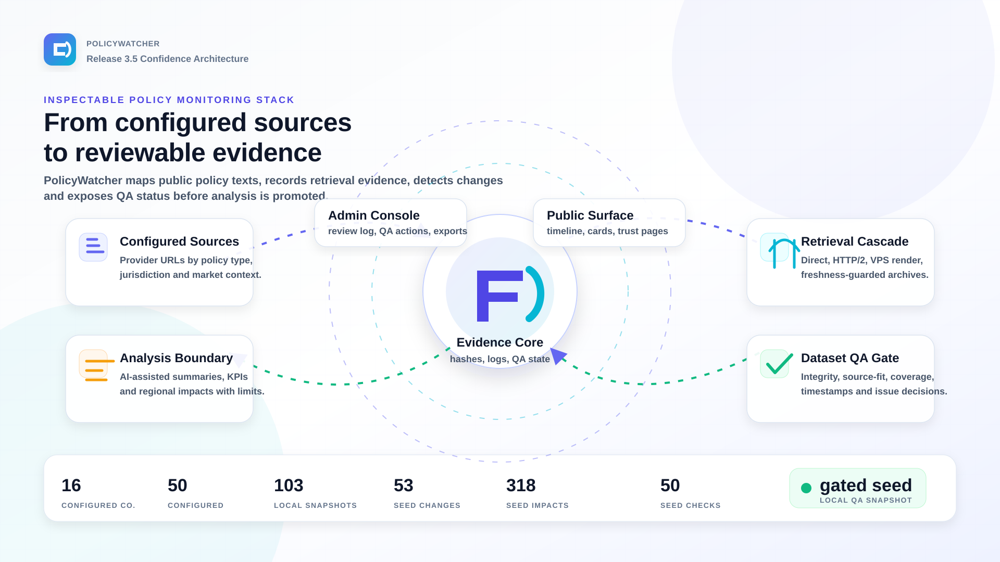
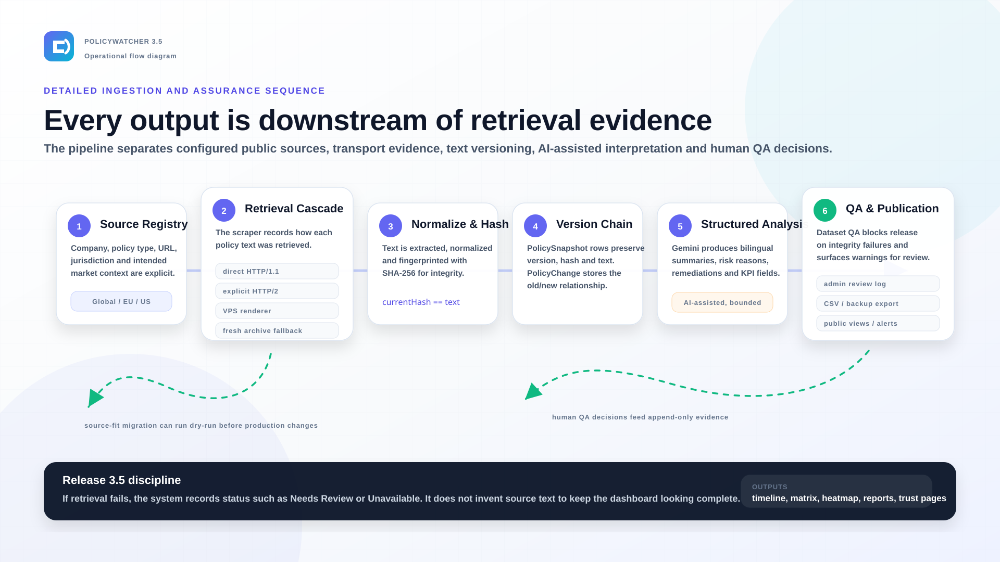
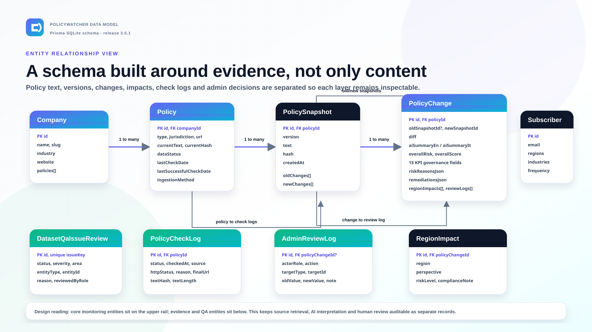
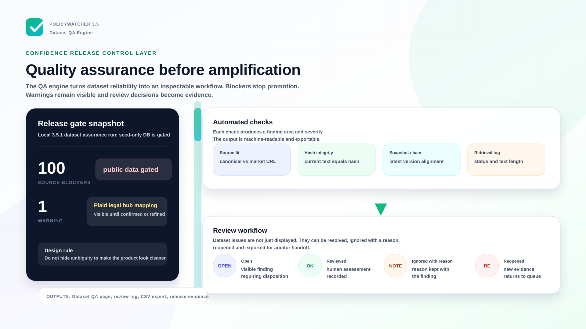
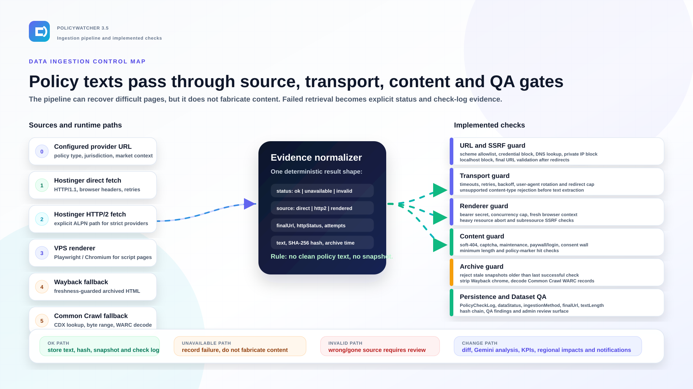

PolicyWatcher 3.5 Confidence Deck
Architecture, ingestion pipeline, entity model and Dataset QA engine




Use arrow keys to navigate. Print from the browser to export a clean 16:9 PDF. Individual SVG and PNG files are in this folder.